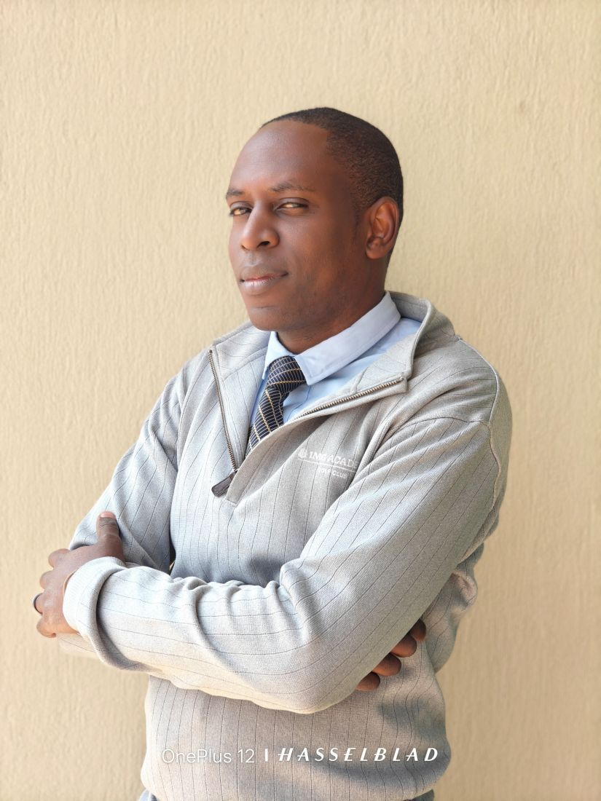

Thomas Matwale | WDD 130

Hello! My name is Thomas Matwale and I am from Kenya. I enjoy biking with my two boys every Saturday mornings. I am a lover of the greatest game ever, that is football. This is my course homepage for WDD 130 where I'll be learning web development fundamentals.